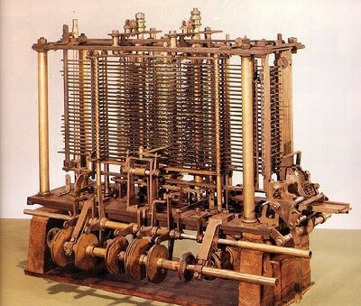

Importantes mulheres que impactaram o mundo da informática
As mulheres enfrentam muitas dificuldades em muitas áreas de atuação e a área de informática não é exceção, mesmo assim, houveram mulheres que se destacaram e que foram muito importantes para tornar a tecnologia o que é hoje.
Confira agora algumas delas.
Ada Lovelace 1815 - 1852
Augusta Ada Byron King, Condessa de Lovelace, foi uma matemática e escritora inglesa.Foi a primeira pessoa a escrever um algoritmo a ser processado por uma máquina.

Ada Lovelace (1815 - 1852)
Ada Lovelace foi a primeira pessoa da história a escrever um algoritmo a ser processado por uma máquina, esta era a Máquina Analítica de Charles Babbage que conheceu Ada ainda adolescente e pediu para que ela fosse a supervisora do projeto dele – construir a máquina.
Máquina analítica de Charles Babbage
Ada escreveu algoritmos complexos que levou 100 anos para ser completamente entendido, graças a ela, 24 anos após sua morte a Universidade de Londres se tornou a primeira da Inglaterra a permitir mulheres se graduarem.
Nascida em 10 de dezembro de 1815 em Londres, Ada foi uma das mais importantes mulheres do mundo da tecnologia que infelizmente veio a falecer com 36 anos de idade de um câncer no útero.
Ada foi importantíssima, mas demorou muito tempo para que fosse reconhecida, o primeiro a fazer isso foi Alan Turing ao fazer referência ao trabalho de Ada, após isso ela passou a ser admitida.
Ada Lovelace foi tão incrível que desde 2009 toda segunda Terça-Feira do mês de outubro é comemorada o Lovelace-day.
Grace Hopper 1906 - 1992
Grace Hopper foi almirante e analista de sistemas da marinha dos Estados Unidos. Foi programadora de um dos primeiros computadores da história, o Mark I.

Grace Hopper (1906 - 1992)
Além de ter sido programadora do Mark I, Grace criou o primeiro compilador de uma linguagem de programação, essa linguagem era o Flow-Matic, a criação dessa linguagem foi extremamente importante para a criação de uma linguagem muito valiosa em sua época, o COBOL. Sendo assim, Grace Hooper é conhecida por ter sido programadora do Mark I e ter criado o primeiro compilador da história.

Grace Hopper ao lado do Mark I
Curiosidade:
Grace Hopper não fez apenas essas importantes contribuições mencionadas acima, ela também cunhou o famoso termo “bug”.

Em certo dia o Mark I parou de funcionar e Grace foi verificar o que aconteceu. O problema é que havia um inseto nos componentes do computador, em seu relatório Grace informou que a falha tinha sido causada por um “bug” que é “inseto” em inglês. Esse termo se popularizou e é usado até hoje, inclusive por pessoas que não são da área de tecnologia.
Margaret Hamilton 1936 (85 anos)
Margaret Hamilton é uma cientista da computação, engenheira de software e empresária estadunidense, foi uma das responsáveis por desenvolver softwares para o projeto Apollo 11 (projeto da NASA que pela primeira vez levou o homem à lua).
Margaret Hamilton - 1936 (85 anos)
Em um dia de trabalho ela levou sua filha, pois não tinha quem cuidar, e sua filha mexeu tanto em um dos computadores que ele desligou, ela percebeu que foi por causa da alta demanda de operações a serem executadas, isso encheu a memória do computador e ele desligou.
Ela relatou isso, mas, não deram ouvidos a ela, então, mais tarde em um dos testes feitos pela NASA aconteceu exatamente o mesmo problema e o teste falhou, Margareth foi então convidada a resolver o problema. Ela desenvolveu um software que quando a memória do computador sobrecarregasse, ele eliminaria as tarefas menos importantes evitando que o computador desligasse graças a esse software o homem foi capaz de pousar na Lua, senão a missão seria abortada.
Além de tudo isso ela também criou o termo “Engenharia de Software” e foi uma das desenvolvedoras dos conceitos de computação paralela.
Premiada pelo Presidente Barack Obama em 2016, Margareth, hoje, aos 84 anos é com certeza uma mulher que entrou para a história.
Karen Spärck Jones 1935 - 2007
Karen Spärck Jones foi uma cientista da computação britânica que criou o conceito da frequência inversa de documentos, uma tecnologia que sustenta os mecanismos de busca modernos.

Karen Spärck Jones (1935 - 2007)
Suas principais áreas de pesquisas foram o processamento de linguagem natural e a recuperação de informações. Sua contribuição mais importante foi o conceito de frequência inversa de documentos (IDF) na recuperação de informações. O IDF é usado na maioria dos mecanismos de pesquisa atualmente.
Karen Spärck Jones morreu de câncer em 2007. Todo ano há uma palestra da British Computer Society em sua homenagem.
Carol Shaw 1955 (66 anos)
Carol Shaw é uma engenheira computacional estadunidense que é a primeira mulher desenvolvedora de jogos eletrônicos no mundo.

Carol Shaw - 1955 (66 anos)
Carol que cresceu na região do Vale do Silício, naturalmente, foi influenciada pela revolução tecnológica que ali aconteceu e seguiu a sua paixão pelo universo dos computadores, quando, em 1978 tornou-se a primeira mulher a desenvolver um jogo eletrônico; Carol chegou, inclusive, a trabalhar na Atari que é uma das maiores empresas de produtos eletrônicos e responsável pela popularização dos videogames.
Apesar de Carol nunca ter se posicionado como feminista e não ter tido como objetivo de carreira a igualdade de gêneros, sua história acabou servindo como inspiração e porta de entrada para outras mulheres na indústria dos videogames. Shaw deixava claro em entrevistas que não queria medir forças com os programadores homens, ou virar ativista, mas sim trabalhar com jogos por gostar de desenvolvê-los.
Frances Allen 1932 - 2020
Frances Allen foi a primeira mulher a ganhar o prêmio Turing devido aos seus trabalhos em optimização de compiladores.

Frances Allen (1932 - 2020)
Com as suas descobertas, foi possível criar sistemas de aperfeiçoamento de códigos e de computação paralela. Isso fez com que diversos softwares passassem a trabalhar de forma otimizada, inclusive nos processadores de baixo desempenho. Frances Allen também trabalhou na National Security Agency (NSA), com a criação de sistemas de segurança digital.
Roberta Williams 1953 (68 anos)
Roberta Williams é uma das mais respeitadas e conhecidas designers de jogos de computador.

Roberta Williams - 1953 (68 anos)
Roberta Williams, ao lado de seu marido, foi a fundadora da On-line Systems, que hoje se chama Sierra, um dos maiores nomes da indústria de jogos eletrônicos, tendo participado do desenvolvimento e/ou distribuição de grandes nomes como King❜s Quest, Phantasmagoria, Half-life e Counter-Strike.
Jean Sammet 1928 - 2017
Jean Sammet foi uma cientista da computação estadunidense que desenvolveu as linguagens FORMAC e COBOL.

Jean Sammet (1928 - 2017)
Sammet foi contratada pela Sperry Gyroscope de 1955 a 1958, onde supervisionou o primeiro grupo de programação científica. De 1958 a 1961, ela trabalhou para a Sylvania como consultora de equipe para pesquisa de programação e membro do grupo COBOL original . Ela ingressou na IBM em 1961, onde desenvolveu o FORMAC, a primeira linguagem de computador amplamente usada para manipulação simbólica de fórmulas matemáticas. Na IBM, ela pesquisou o uso do inglês restrito como linguagem de programação e o uso da linguagem natural para programas matemáticos. Foi Gerente de Planejamento de Tecnologia de Programação da Divisão Federal de Sistemas de 1968 a 1974, e foi nomeada Gerente de Tecnologia de Software em 1979.
Sammet fundou o Comitê de Interesse Especial da ACM em Manipulação Simbólica e Algébrica (SICSAM) em 1965 e foi Presidente do Grupo de Interesse Especial em Linguagens de Programação (SIGPLAN). Ela foi a primeira mulher presidente da ACM, de 1974 a 1976.
Sammet morreu em 20 de maio de 2017 em Silver Spring, Maryland, após uma breve doença, durante sua vida colecionou diversos prêmios e contribuiu grandemente na história da informática.
Radia Perlman - 1951 (69 anos)
Radia Perlman é uma cientista da computação estadunidense, projetista de software e engenheira de redes; conhecida pela criação do protocolo Spanning Tree (STP).

Radia Perlman - 1951 (70 anos)
Muitas vezes referenciada como “mãe da internet”, sua invenção, o STP, é fundamental para a operação de pontes de rede. Atualmente ela desenvolveu o protocolo TRILL para corrigir alguns problemas do STP.
Hoje, aos 70 anos, Perlman trabalha na Dell EMC e possui uma carreira de sucesso. Foi bolsista na Sun Microsystems e ministrou cursos na Universidade de Washington, na Universidade de Harvard e no MIT, e foi palestrante em eventos em todo o mundo. Perlman recebeu prêmios como o Lifetime Achievement Awards da Usenix e o Association for Computing Machinery 's Special Interest Group on Data Communication (SIGCOMM).
Claro que houveram muitas outras mulheres que foram extremamente importantes na área de informática, mas seria impossível abordar todas neste artigo, porém, o foco era destacar mulheres que foram importantíssimas para o avanço da tecnologia e que, apesar de todas as dificuldades encontradas por mulheres nesta área devido a desigualdade de gênero, elas conseguiram se tornar grandes profissionais que entraram para a história.
Henrique Cardoso